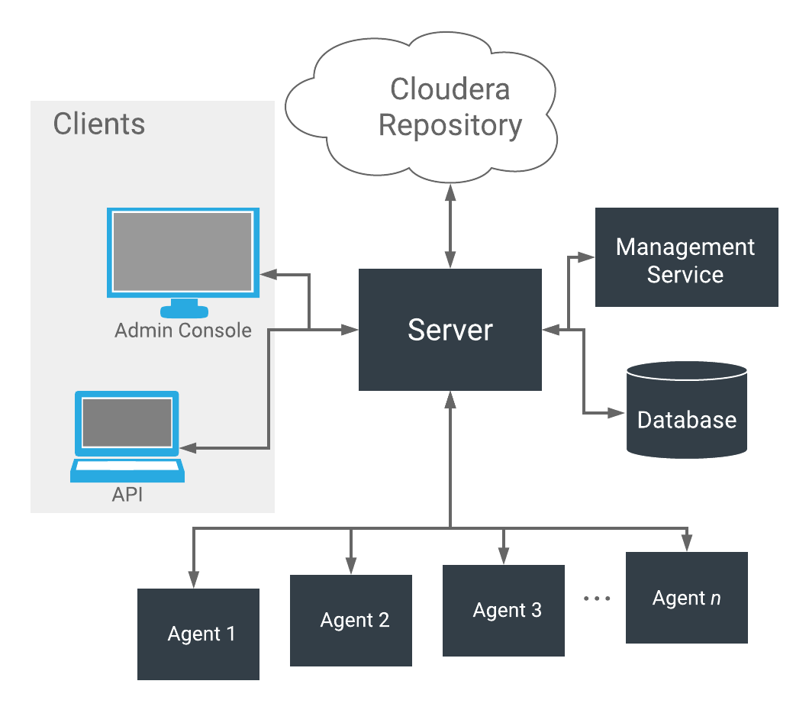

Architecture
As depicted below, the heart of Cloudera Manager is the Cloudera Manager Server. The Server hosts the Admin Console Web Server and the application logic, and is responsible for installing software, configuring, starting, and stopping services, and managing the cluster on which the services run.

The Cloudera Manager Server works with several other components:
- Agent - installed on every host. The agent is responsible for starting and stopping processes, unpacking configurations, triggering installations, and monitoring the host.
- Management Service - a service consisting of a set of roles that perform various monitoring, alerting, and reporting functions.
- Database - stores configuration and monitoring information. Typically, multiple logical databases run across one or more database servers. For example, the Cloudera Manager Server and the monitoring roles use different logical databases.
- Cloudera Repository - repository of software for distribution by Cloudera Manager.
-
Clients - are the interfaces for interacting with the
server:
- Admin Console - Web-based UI with which administrators manage clusters and Cloudera Manager.
- API - API with which developers create custom Cloudera Manager applications.
Heartbeating
Heartbeats are a primary communication mechanism in Cloudera Manager. By default Agents send heartbeats every 15 seconds to the Cloudera Manager Server. However, to reduce user latency the frequency is increased when state is changing.
During the heartbeat exchange, the Agent notifies the Cloudera Manager Server of its activities. In turn the Cloudera Manager Server responds with the actions the Agent should be performing. Both the Agent and the Cloudera Manager Server end up doing some reconciliation. For example, if you start a service, the Agent attempts to start the relevant processes; if a process fails to start, the Cloudera Manager Server marks the start command as having failed.